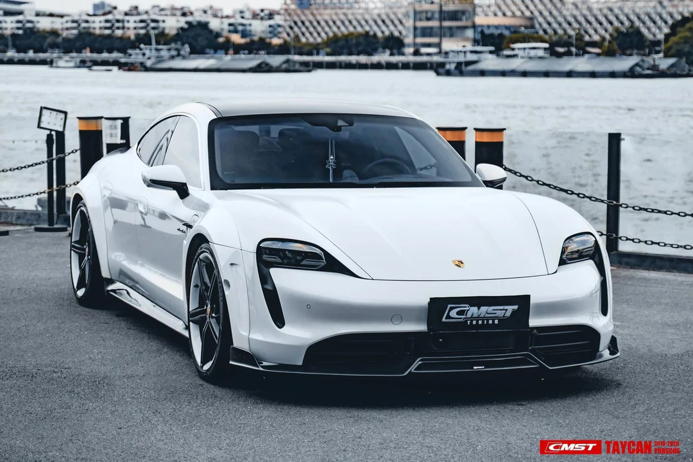

Browse Porsche Car Specifications
Porsche 911 GT3 RS

- Engine: 4.0L Naturally Aspirated Flat-6
- Horsepower: 518 hp
- Top Speed: 312 km/h (194 mph)
- 0-100 km/h: 3.2 seconds
- Price: Approx. $187,000 USD
Records & Achievements
- üèÜ N√ºrburgring Lap Time: 6 minutes 56.4 seconds (record for naturally aspirated street-legal cars)
- üèÜ Winner of multiple GT3 racing championships worldwide
- üèÜ Known for exceptional handling and track performance
- üèÜ Widely praised by automotive critics and enthusiasts
Porsche Taycan Turbo S

- Engine: Dual Electric Motors
- Horsepower: Up to 750 hp (with overboost)
- Top Speed: 260 km/h (162 mph)
- 0-100 km/h: 2.8 seconds
- Price: Approx. $185,000 USD
Porsche Panamera Turbo S

- Engine: 4.0L Twin-Turbo V8
- Horsepower: 620 hp
- Top Speed: 310 km/h (193 mph)
- 0-100 km/h: 3.1 seconds
- Price: Approx. $180,000 USD